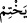

Âyette şu inceliğe işâret edilir: Melekler, pegamberler ve onların vârisleri olan
âlimler şerîatın tebliğ ve beyân edilmesinde yanlış yapmaktan ve herhangi bir konuda
Allah’a iftirâ etmekten mâsûm ve mahfuzdurlar.
Sülemî, Hakàik’ta Sehl b. Abdullah el-Tüsterî (k.s)’den naklediyor ki: Allah ezelî
şevkin ve sonsuz muhabbetin mührünü kalbine vurur ki başkasına iltifat etmeyesin.
Halka icâbet etmek ve onlarla birlikte olmaktan kurtulasın.
“Ve Allah bâtılı yok eder; sözleriyle hakkı ortaya koyar.” Bu, Allah’a iftirânın
olmadığını beyan eden yeni bir cümledir. “
/yahtim” kelimesine mâtuf değildir. İsm-i
celîlin “Allah” şeklinde ism-i zâhir olarak getirilmesi de bunu beyân etmektedir. Muzari
kalıbıyla gelmesi ise hükmün devamlılık arzetmesinden dolayıdır. Allah her hangi bir
şarta bağlı olmaksızın mutlak olarak bâtılı mahveder. Mânâ şöyledir: Bâtılı mahvedip
gönderdiği vahyi, verdiği hüküm ve fermânıyla hakkı isbat etmesi Allah Teâlâ’nın
âdetindendir. Şâyet Kur’an müşriklerin iddiâ ettikleri gibi Allah’a karşı uydurulmuş bir
ifitirâ olsaydı elbette onu da mahveder ve bertaraf ederdi.
Bu ifâde, Peygamberimiz (s.a.) için bir vaad, bir müjde de olabilir. Şöyle ki; Allah
müşriklerin içinde bulundukları iftirâ ve yalanlamayı mahvedecek, Peygamber’in
üzerinde bulunduğu yolun hak olduğunu Kur’an’la yahut dönüşü olmayan bir hükümle
isbât edecektir. Bu mânâya göre buradaki muzari kalıpları istikbâl için olur.
“Şüphesiz O, kalplerde olanları bilendir.” Mahvetmek yahut isbât etmekten ibaret
olan kalplere lâyık hükümleri icrâ eder.
Kâşifî şöyle der: Doğrusu sen de, onların senin hakkındaki şüphe ve iftirâları da
Allah için gizli değildir.
Allah göğüslerdeki gizlilikleri, kalpte bulunan muharrik unsurları ve orada yer alan
bir takım mâni unsurları da bilir. Göğüslerde olan şeyler, sürekli orada bulunup, oraya
hulûl ettiği için “göğüslerin sâhibi” olarak nitelenmiştir. Süte “kap sâhibi” ve anne
karnındaki cenîne “karın sâhibi” denmesi bu kabildendir.
Rivâyet edildiğine göre Mûsâ (a.s.) devrinde bir adam vefat etti. Allah Mûsâ (a.s.)’a:
“Benim dostlarımdan biri vefat etti. Git onu yıka” diye vahyettti. Mûsâ (a.s.) geldiğinde
günahkâr olduğu için insanların ölen o adamı mezbele bir yere attıklarını gördü. Mûsâ
(a.s.): “Ya Rabbi! İnsanların bu adam hakkındaki sözlerini duyuyorsun” dedi. Allah
Teâlâ şöyle buyurdu: “Yâ Mûsâ! Bu adam vefat edeceği zaman üç şeyle benden şefâat
diledi. Bu sebeplere tevessül ederek benden bütün günahlarının affını istedi. Ben de
hepsini affettim.
İlk olarak şöyle dedi: Ya Rabbi! Sen biliyorsun ki, her ne kadar ben şeytanın
süslemesi ve kötü arkadaşların tahrikleriyle birçok günah işlemiş olsam da ben bu
günahları kalben sevmiyor ve nahoş buluyordum. İkincisi; her ne kadar ben günah
işlemede fâsıklarla beraber idiysem de yine de sâlih kimselerle oturmak bana daha
sevimliydi. Üçüncüsü; karşıma biri sâlih ve iyi, diğeri de fâcir ve kötü adam çıksa,